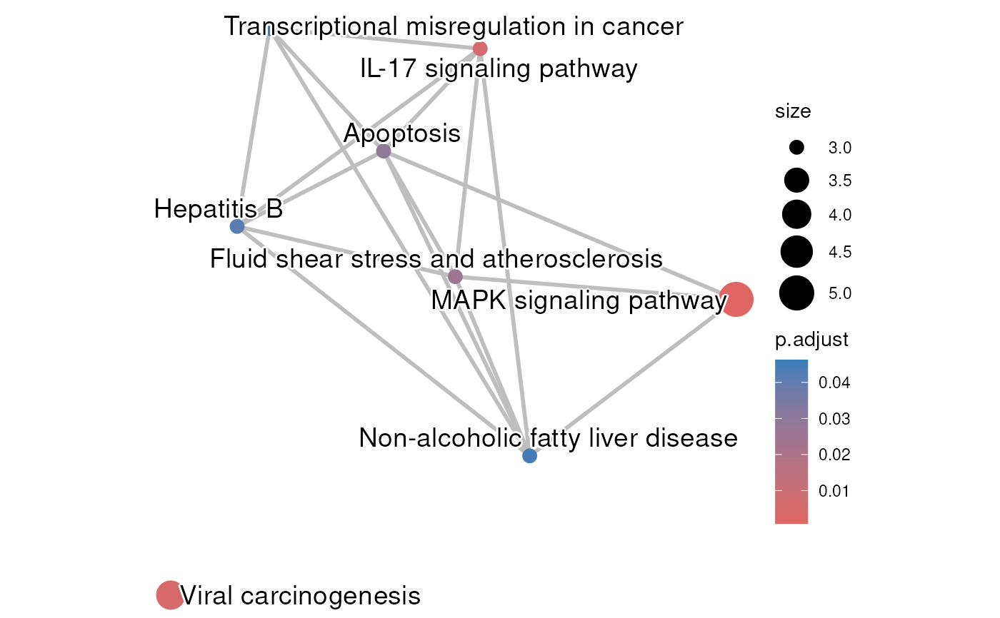

The result of an enrichment analysis that has been done using the significantly differentially expressed genes between napabucasin treated and DMSO control MiaPaCa2 cells stably expressing the Rosa26 control vector. The cells were treated for 2 hour with 0.5 uM napabucasin. The protocol to generate the RNA-seq is described in Froeling F.E.M. et al 2019.
Source:R/enrichViewNet.R
rosaNapaVsDMSOEnrichment.RdThe enrichment analysis was done with gprofile2 package (Kolberg L et al 2020) with database version 'e109_eg56_p17_1d3191d' and g:SCS multiple testing correction method applying significance threshold of 0.05 (Raudvere U et al 2019). All tested genes were used as background.
Usage
data(rosaNapaVsDMSOEnrichment)Format
a list created by gprofiler2 that contains the results
from the enrichment analysis:
"result": adata.framewith the significantly enriched terms"meta": alistwith the meta-data information
Source
The original RNA-sequencing data is available at the Gene Expression Omnibus (GEO) under the accession number GSE135352.
Value
a list created by gprofiler2 that contains the results
from the enrichment analysis:
"result": adata.framewith the significantly enriched terms"meta": alistwith the meta-data information
Details
The object is a named list with 2 entries. The 'result' entry
contains a data.frame with the enrichment analysis results and
the 'meta' entry contains metadata information.
The dataset used for the enrichment analysis is associated to this publication:
Froeling F.E.M. et al.Bioactivation of Napabucasin Triggers Reactive Oxygen Species–Mediated Cancer Cell Death. Clin Cancer Res 1 December 2019; 25 (23): 7162–7174
The enrichment analysis has been done with gprofile2 package (Kolberg L et al 2020) with database version 'e109_eg56_p17_1d3191d' and g:SCS multiple testing correction method applying significance threshold of 0.05 (Raudvere U et al 2019). All tested genes were used as background.
See also
createNetwork for transforming functional enrichment results from gprofiler2 into a Cytoscape network
createEnrichMap for transforming functional enrichment results from gprofiler2 into an enrichment map
Examples
## Loading dataset containing the enrichment analysis done on the
## differentially expressed analysis between 2-hour treatment with 0.5 uM
## napabucasin and DMSO control MiaPaCa2 cells stably expressing
## the Rosa26 control vector
data(rosaNapaVsDMSOEnrichment)
## Create an enrichment map for the KEGG terms
createEnrichMap(gostObject=rosaNapaVsDMSOEnrichment,
query="rosa_napa_vs_DMSO", source="KEGG")
